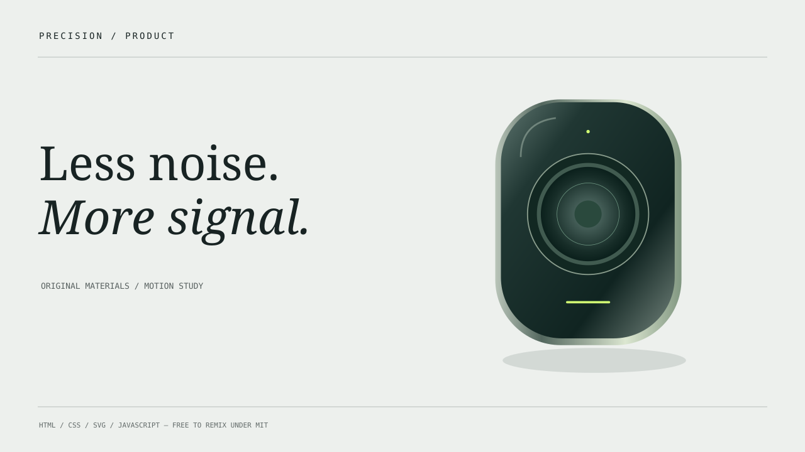
精密产品 · 光切面
冷白工作室、深色产品雕塑、精确标注与分层拆解；适合产品机制和功能介绍。
可直接运行的 HTML 动画、原创 SVG 材料、轻量动效代码和改编思路。把它们拆开、混搭、重新构图。它们是创作材料，不是限定你的模板。
OFFLINE · NO BUILD · NO REQUIRED FRAMEWORK · MIT
冷白工作室、深色产品雕塑、精确标注与分层拆解；适合产品机制和功能介绍。
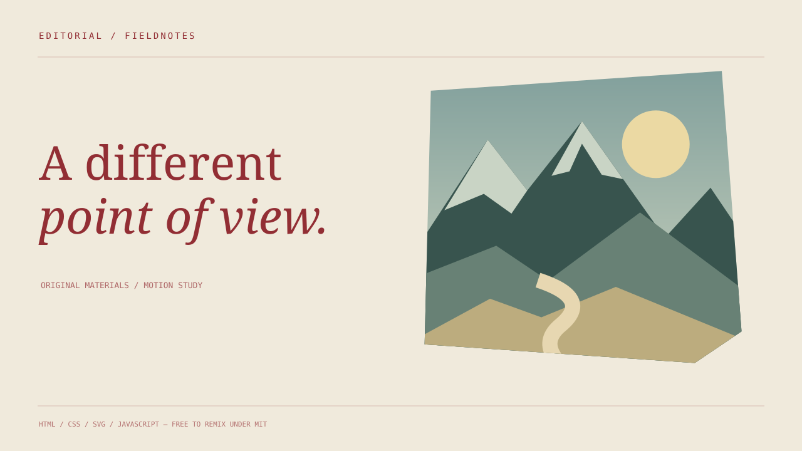
暖纸、深红衬线字、地貌剪影、胶带与裁切线；为观点和人文主题组织层次。
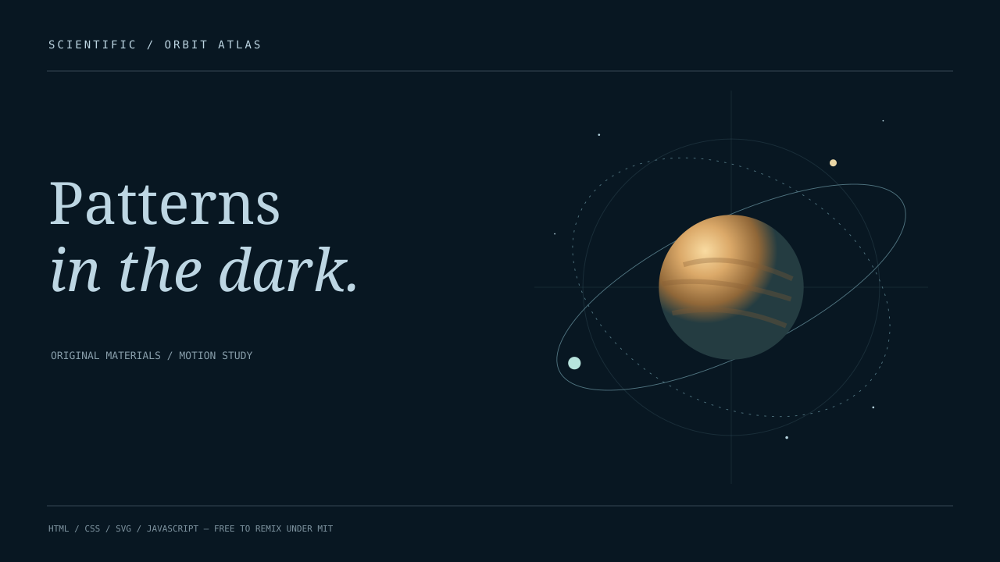
深蓝坐标空间、琥珀天体与示意轨道；用扫描、路径绘制和量纲标签说明关系。
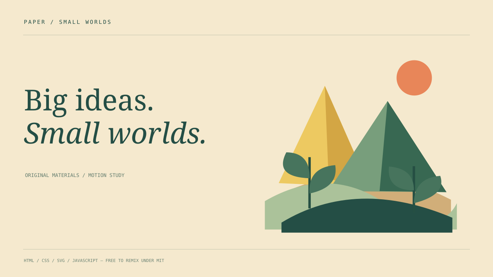
奶油纸面、折叠山谷和剪纸植物；通过分层组装解释生态、流程和日常故事。
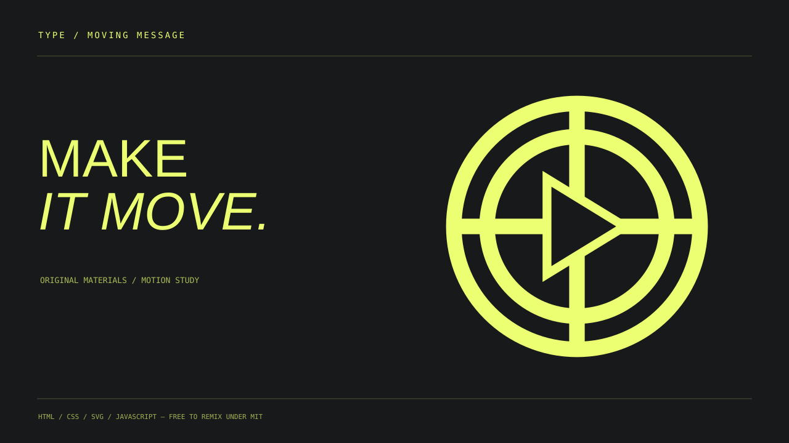
酸橙色大字、硬边黑底和标志式圆环；字形本身承担节奏，信息不靠快速闪烁。
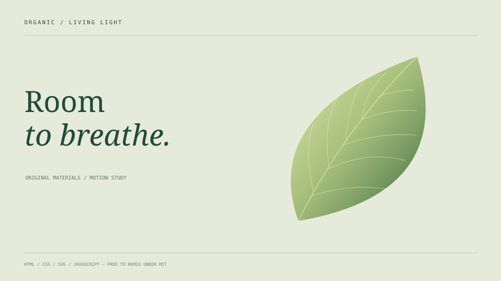
苔绿留白、透光叶片与缓慢光斑；用呼吸式尺度和光照相位表现材料、环境和感受。
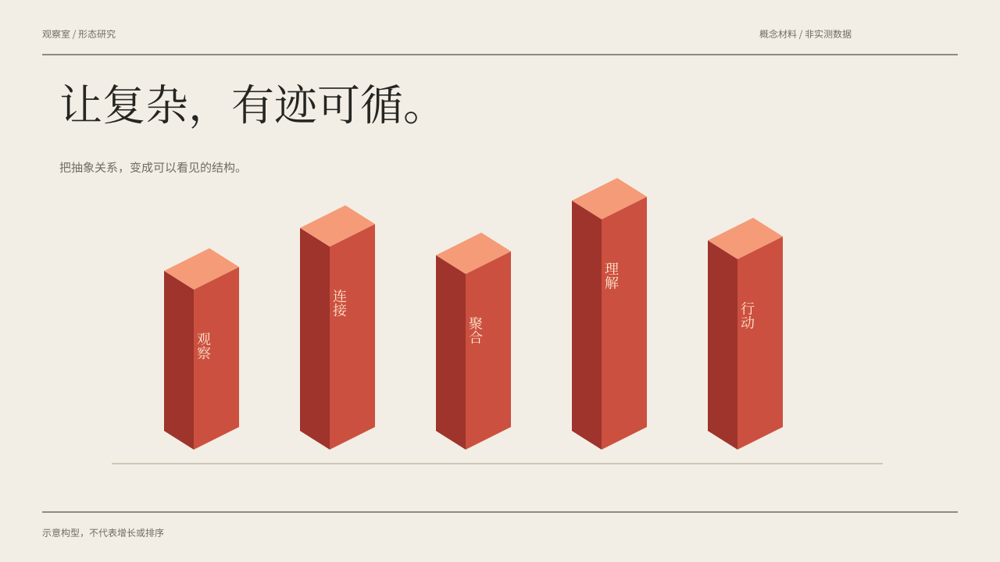
纸白网格上的朱砂折叠雕塑，以全宽中文标题、等轴构型和边注连接抽象概念；不是柱图数据模板。
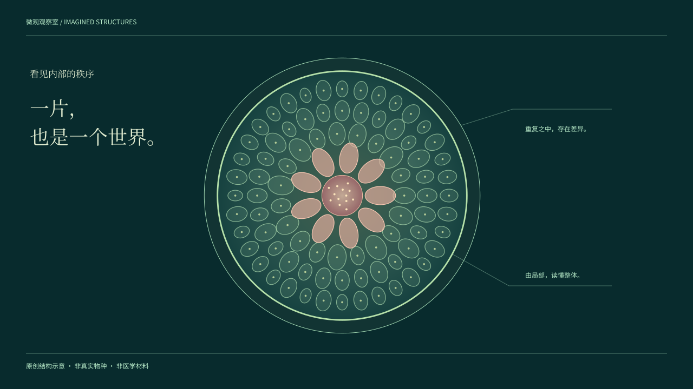
深青观察场中展开透明薄膜、放射细胞与想象横截面；主体居中、标注环绕，用层次关系组织观察。
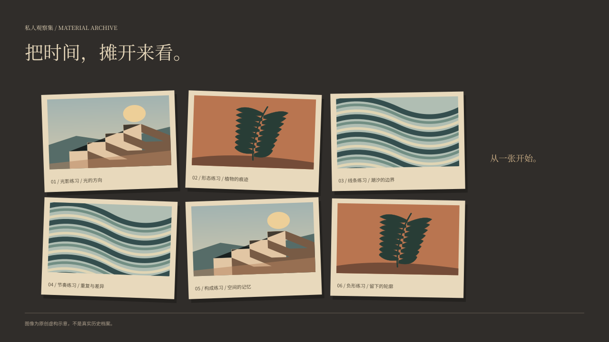
深色桌面上的六张原创版画以接触印样和轻透视展开，纸边、胶带与抽离焦点让材料之间形成叙事关系。
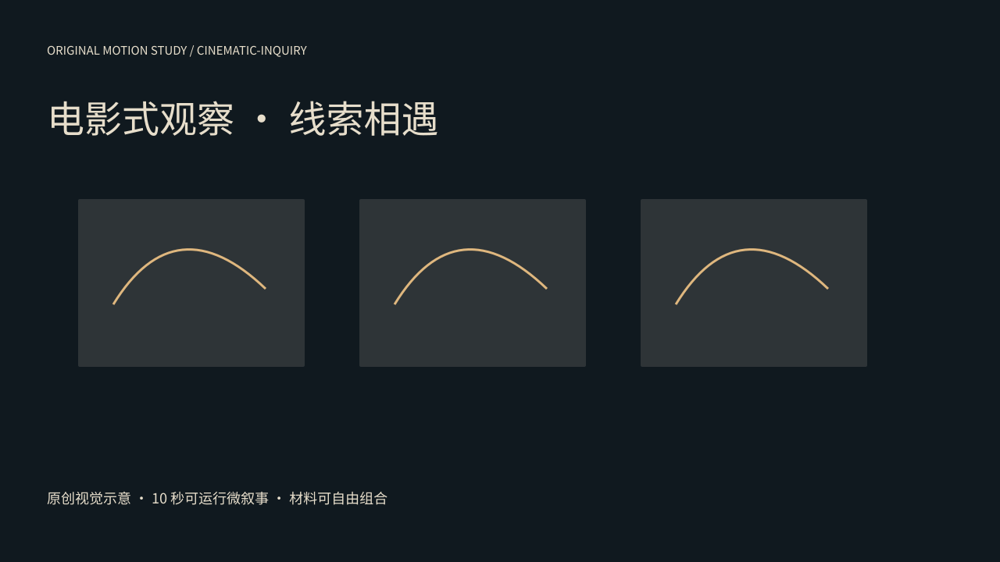
从三张材料切片进入局部观察，再让路径汇合成新的问题；宽幅接触印样与圆形透镜共同组织三幕微叙事。
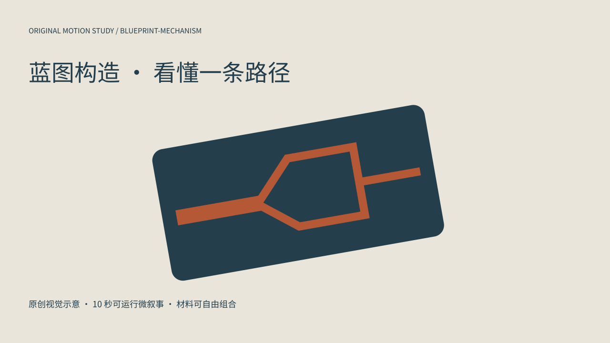
以斜向机构为舞台，让外壳剖开、内部通道显露、两路标记汇合；完整演示从表面到关系的观察过程。
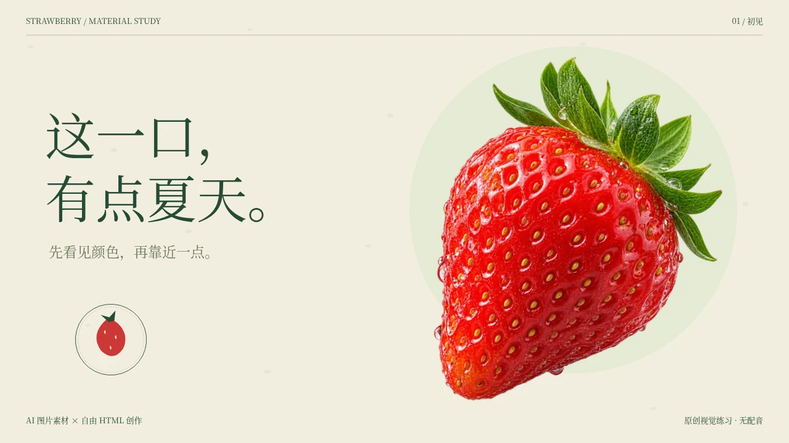
实际原生生图素材，加上纸张、镜头聚焦和自由排字；用新的草莓题材检验材料重组。
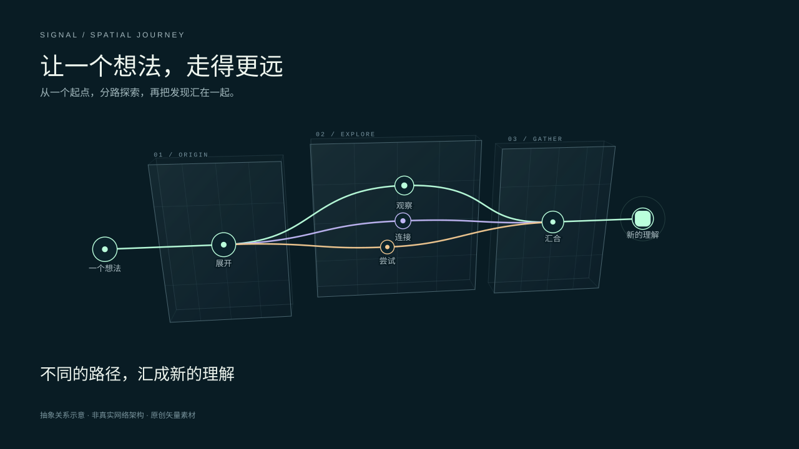
跟随一条消息穿越层叠节点，分路探索后再次汇合。用路径、深度和镜头组织抽象关系。
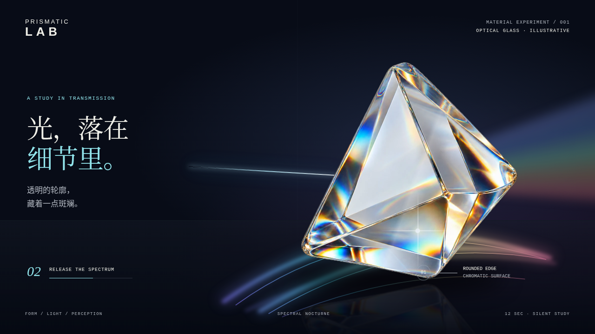
光学玻璃微距、光束切面与光谱焦散，带真实生成透明棱镜和可编辑矢量光学材质。
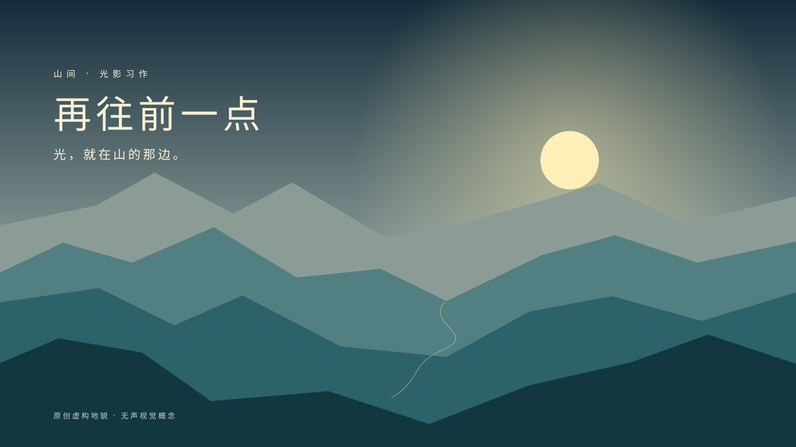
六层原创山脊、侧光薄雾、侵蚀纹理、松枝前景与溪流反光；用镜头穿行讲述十二秒山间光影。